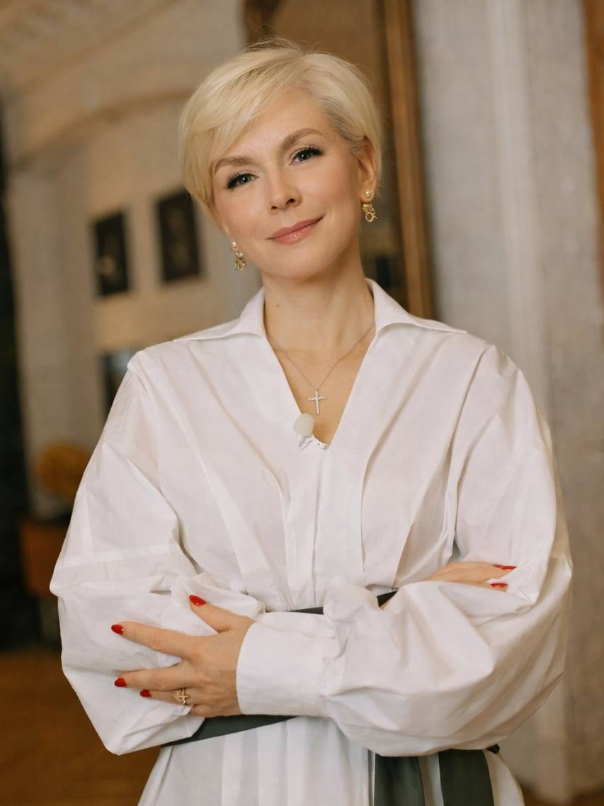

Не просто определить, какие проекты можно запустить, а понять, что действительно имеет смысл строить, для кого, на что можно опереться и какой путь с большей вероятностью приведёт к желаемому результату.
От личного и бизнес-замысла — к продуктовой конструкции, ресурсам, стратегическим ходам и конкретному маршруту реализации.
Этапы задают логику движения, но работа не строго линейна: исследование, проектирование и проверка гипотез частично идут параллельно и уточняют друг друга.
Количество встреч не привязано жёстко к этапам: отдельные этапы могут занимать несколько встреч, а часть работы между ними идёт параллельно.
Куда Светлана хочет прийти лично и как предприниматель, какую роль занимать и какую бизнес-конструкцию создать.
Разбираем:
Книга, продукты и партнёрства на этом этапе присутствуют как исходные гипотезы, а не как принятые решения.
С чем реально имеем дело и что из исходных предположений выдерживает проверку реальностью.
Уточняем гипотезы:
Картина продолжает уточняться в ходе следующего этапа.
Что действительно имеет смысл строить и как соединить продукты, аудитории, смыслы, ресурсы и потенциальных партнёров в работающую стратегическую конструкцию.
Этапы 02 и 03 частично идут параллельно: новые данные меняют проектируемые решения, а новые решения создают гипотезы, которые возвращаются в исследование.
На какой стратегической конфигурации действительно стоит концентрировать ресурсы.
Сравниваем сформировавшиеся варианты относительно:
Это личная и бизнес-стратегия одновременно: решение оценивается не только по экономической эффективности, но и по соответствию роли и жизни, которую хочет строить Светлана.
Как превратить выбранную стратегическую конфигурацию в реалистичную систему реализации.
Определяем:
Только после проектирования стратегии можно обоснованно оценить состав, сроки и стоимость её реализации.
Результат — обоснованная стратегия и спроектированный маршрут её реализации.